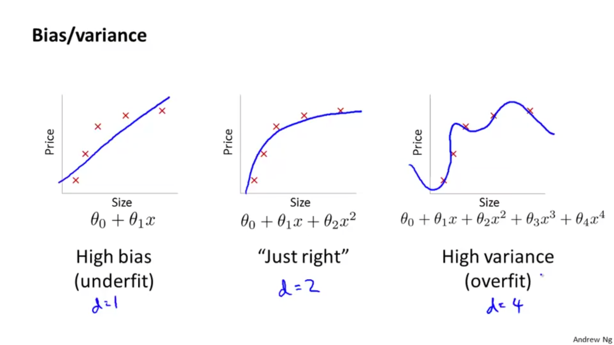
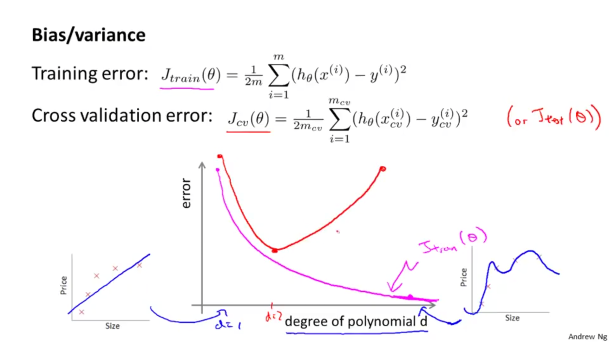
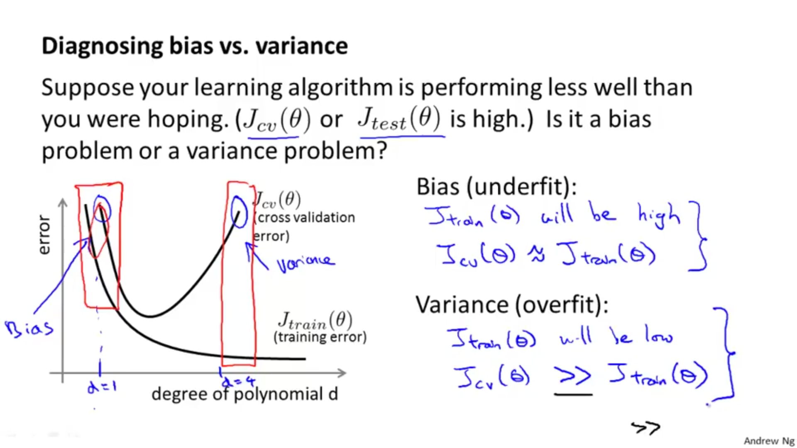

Stell dir vor wir sind auf dem Rummel - oder Dom wie wir zur Überraschung vieler in Hamburg sagen - beim Scheibenschießen mit einem Luftgewehr. Da ich nie gut darin war, trainiere ich statt selbst zu schießen lieber einen Schießroboter. Ich habe ein paar Trainingsversuche gemacht und lasse den Roboter mit unterschiedlichen Modellen schießen.
Hier sind die Ergebnisse.
Und pssst, wir verraten dir schon jetzt ein Geheimnis: das gute Ergebnis ist gar nicht so einfach zu erreichen und bei den beiden anderen Modellen haben wir jeweils klassische Fehler gemacht. Aber jetzt gucken wir uns erst einmal die Ergebnisse an. Welches findest du am besten? Was stimmt mit den anderen beiden nicht? Was für Unterschiede siehst du?
| Roboter Modell 1 | Roboter Modell 2 | Roboter Modell 3 |
Das war nicht sehr schwer, oder? Natürlich ist das Modell 2 das beste. Hier treffen wir am meisten die Mitte. Der Fehler, also die Abweichung von der Mitte ist am geringsten. Spannender sind tatsächlich die beiden weniger guten Modelle 1 und 3. Beide haben einen deutlich größeren Fehler, sie unterscheiden sind aber doch deutlich von einander.
Mein Roboter in Modell 1 wirkt etwas bockig und scheint nicht viel gelernt zu haben. Obwohl er offensichtlich schlecht schießt, stört ihn das nicht sonderlich. Trotz gegensätzlicher Information ohne jeglichen richtig guten Treffer scheint er an seiner einfachen Meinung wie man zu schießen hat, festzuhalten. Der Roboter ist also sehr voreingenommen, welches im Englischen dem Term high bias entspricht. Und dieser Term ist für ein solches Fehlerbild tatsächlich gebräuchlich.
Das dritte Modell wirkt sonderbar. Ein paar Schüsse treffen das Ziel sehr gut. Sogar besser und genauer als im insgesamt besten Modell 2. Andere Schüsse sind aber wieder völlig daneben, ähnlich daneben wie im Modell 1. Hier variiert also die Qualität der Schüsse sehr, man spricht daher auch von high variance.
Hier nochmal dieselben Ergebnisse, aber mit den ensprechenden Ausdrücken mit denen man solche Fehlerbilder bezeichnet. Für das gute Modell in der Mitte gibt es keinen einheitlichen Term, machnmal nennt man ihn den Sweet Spot oder Just Right:
|
High Bias der sture Roboter |
Sweet Spot kontinuierlich gute Leistung |
High Variance mal richtig gut, mal schlecht |
Wie es zu diesen Trefferbildern kommt klären wir im Folgenden.
Die Komplexität des Modells bestimmt, wie gut es die Realität abbilden kann. Das kann man anhand eines Regressions-Beispiels sehen, in dem wir versuchen, eine Menge von Datenpunkten mit einer Funktion zu beschreiben. Für diese Funktion nehmen wir ein Polynom und der der Grad des Polynoms beschränkt die mögliche Komplexität des Modells.
Eine Gerade (links) ist zu einfach für die Datenbpunkte, wir passen die Punkte nicht richtig ab, das nennt man 'underfitting' oder 'high bias'.
Ein hochgradiges Polynom (rechts) verbindet zwar alle Datenpunkte, aber es wirkt nicht wie die einfachste Lösung, es sieht schon intuitiv zu speziell aus.
Das Modell in der Mitte scheint das beste. Es passt auf alle Datenpunkte, wirkt aber gerade komplex genug.
Dies sind erst einmal nur Eindrücke, aber wenn wir uns neben den Trainingsdaten nun auch Testdaten ansehen, können wir unsere Untuition greifbarer machen und sehen, dass sie ganz richtig ist:
Der rosa Graph beschreibt den Fehler unserer Funktion für die Datenpunkte, die wir zum Training verwenden. Diesen Fehler können wir immer weiter minimieren, indem wir die Punkte perfekt treffen.
Nun wird es aber spannend, weil wir Test-Daten hinzunehmen, die wir bisher nicht in Betracht gezogen haben. Damit können wir überprüfen, wie gut unser Modell am 'echten' Modell dran ist. Dies ist die rote Kurve.
Im Fall unseres Polynoms sehen wir, dass diese Kurve irgendwann wieder hoch geht, wenn wir den Grad erhöhen. Kurz bevor sie wieder hoch geht, erreichen wie den Sweet-Spot, also die beste Konfiguration unseres Modells.
Auf der rechten Seite sehen wir das zu komplexe Modell, das für Test-Daten tatsächlich schlecht abschneidet.
Mit diesem Handwerkszeug können wir nun Over- und Underfitting besser verstehen:
Wir sehen auch, dass wir zumindest in diesem Beispiel Bias und Variance nicht gleichzeitig minimieren können. Je stärker wir den Bias minimieren, desto größer wird die Varianz.
Wenn wir auf das Ausdrucksmittel unserer Zielscheiben zurück kommen wollen, kann man den Fehler von Trainings- und Testdaten wieder als mehr oder weniger gute Treffer darstellen. Je größer der Fehler, desto weiter weg ist der Treffer von der Mitte der Zielscheibe. Dabei stellen die schwarzen Punkte Trainingsdaten, die grauen Testdaten dar:
| Underfitting, High Bias | Sweet Spot | Overfitting, High Variance |
Ganz links sehen wir wieder 'Underfitting'. Der Fehler bei Test- und Trainingsdaten ist groß. Kein gutes Ergebnis.
Wir trainieren dann unser Modell, sodass der Fehler bei Trainings- und Testdaten zurück geht und gelangen auf das Ergebnis in der Mitte. Fehlerraten sind ähnlich, und möglichst gering.
Wenn wir unser Modell nun weiter auf die Trainingsdaten abstimmen geht deren Fehler weiter zurück und wir sehen noch genauere Treffer in der Mitte der Scheibe. Allerdings geht dadruch die Fehlerrate für Datensätze, die wir nicht zum Training benutzt haben nach oben.
Man könnte denken: warum nehmen wir dann nicht alle Datensätze und trainieren unser Modell einfach perfekt immer weiter. Das Problem dabei ist: typischerweise soll unser trainiertes System von den bekannten Datensätzen abstrahieren können und auch neue, ähnliche Datensätze richtig treffen bzw. klassifizieren.
Kehren wir nun zu unserem Beispiel der Schüsse auf dem Rummel zurück. Auch hier haben wir ein Regressions-Beispiel, bei dem wir eine Reihe von Features auf Schußposition (x,y,z) und Neigung des Laufs (x, y) abbilden. Das Bild mit der Zielscheibe funktioniert hier natürlich noch besser, da man sich jeden Datenpunkt tatsächlich wie einen Schuß vorstellen kann. Die schwarzen Punkte wären dann Schüsse unter bekannten (idealen) Bedingungen, mit denen man das eigenen Schießen trainiert, während die grauen die auf dem Rummel abgegebenen Schüsse sein könnten.